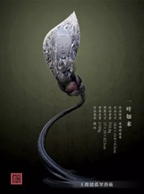
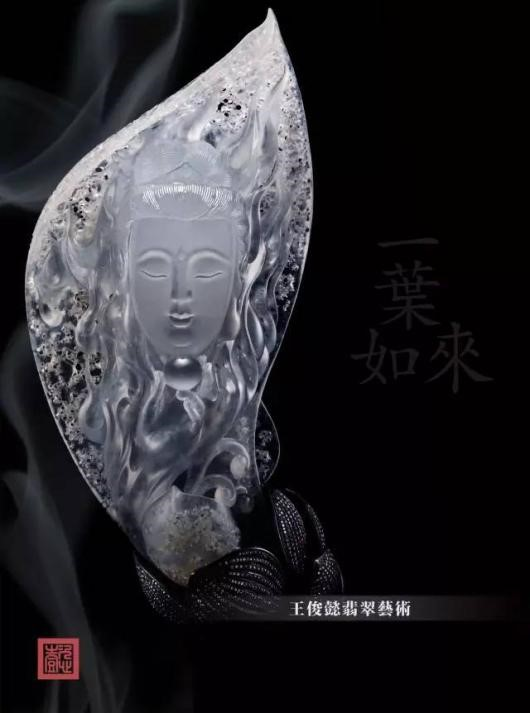
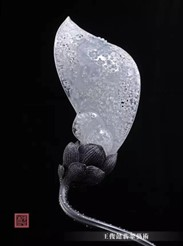
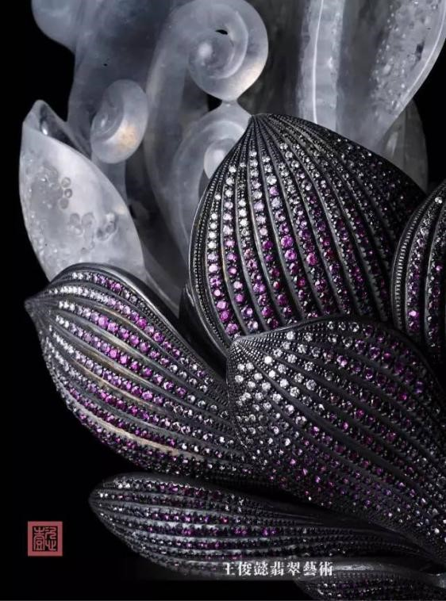

主石材质：玻璃种翡翠
配饰材质：纯银、宝石
作品尺寸：18.6×10.8×6.2cm
主石重量：703.8g
作品重量：2169g




作品完美结合了“金雕”和“玉琢”，创意融汇中国传统文化与佛学哲思，运用了当代装置艺术手法，加以玻璃种翡翠，表现了生命“顿悟”的过程，是王俊懿佛造艺术系列的里程碑作品之一。
花苞部分由红宝石和钻石手工镶嵌而成，纯银的莲花枝干上反式镶嵌的钻石露出尖端，凸显了青莲微刺的感觉，同时使钻石的呈现出内敛如水的光芒，艺术效果令人耳目一新。